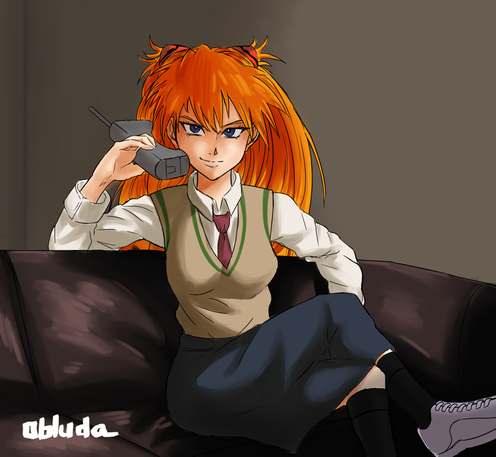
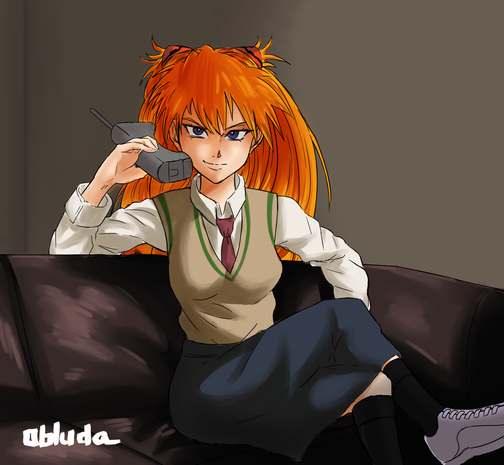
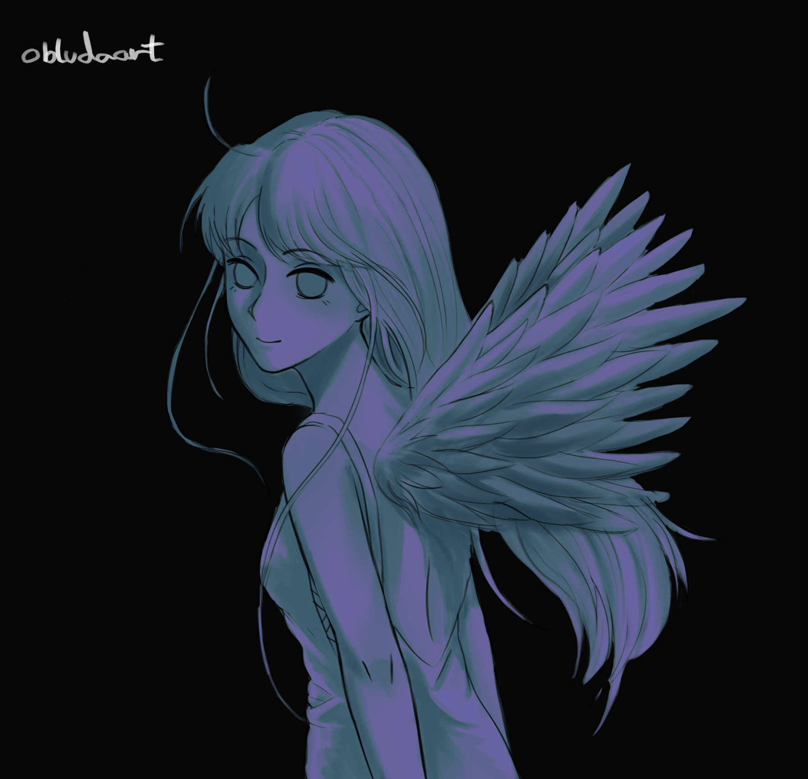
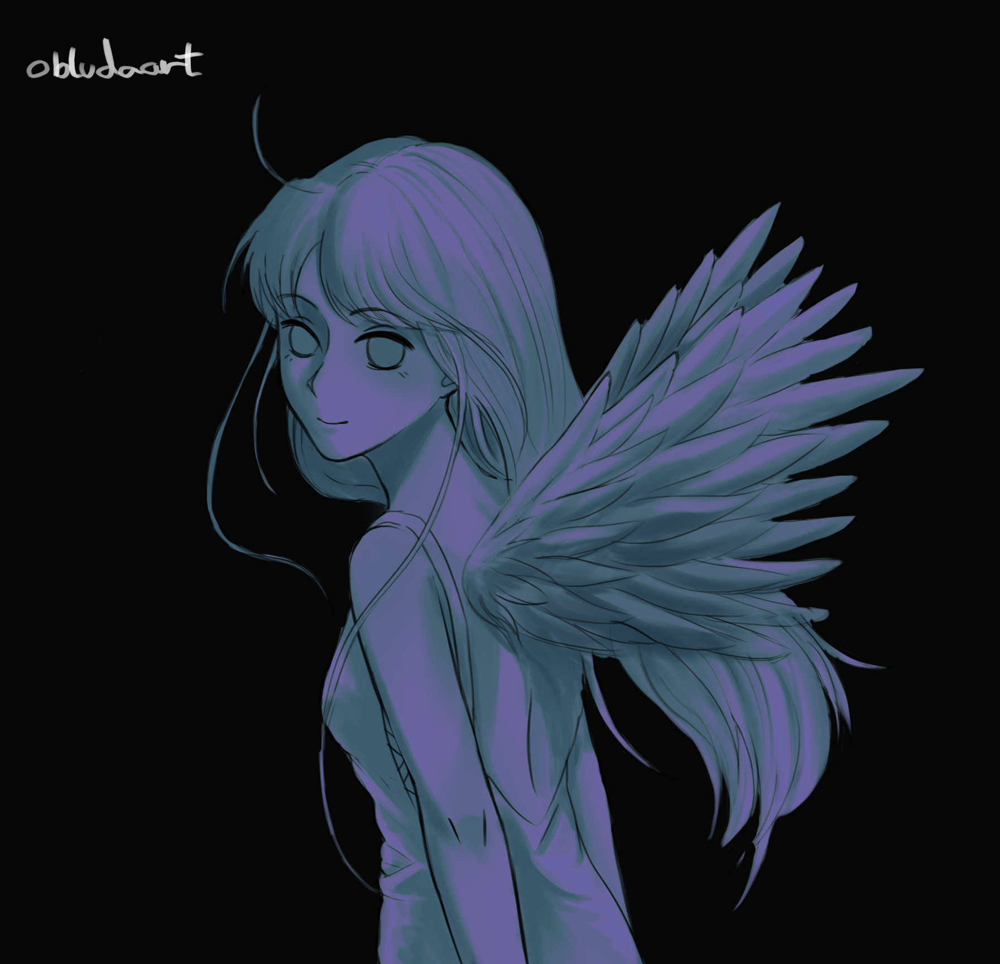
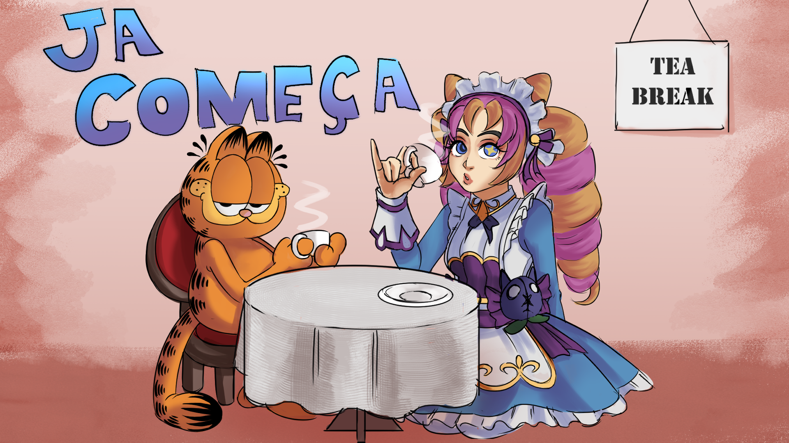
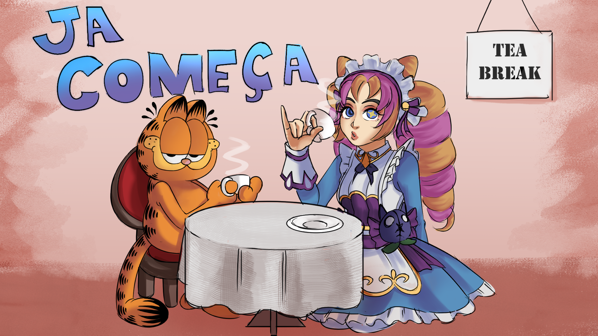

SOBRE MIM
Sou um artista visual brasileiro apaixonado por narrativas visuais e estilos expressivos. Busco sempre experimentar técnicas que mesclam o digital com referências clássicas e modernas da arte. Este portfólio apresenta uma seleção das minhas obras mais recentes.
PORTFÓLIO

 

 


 
